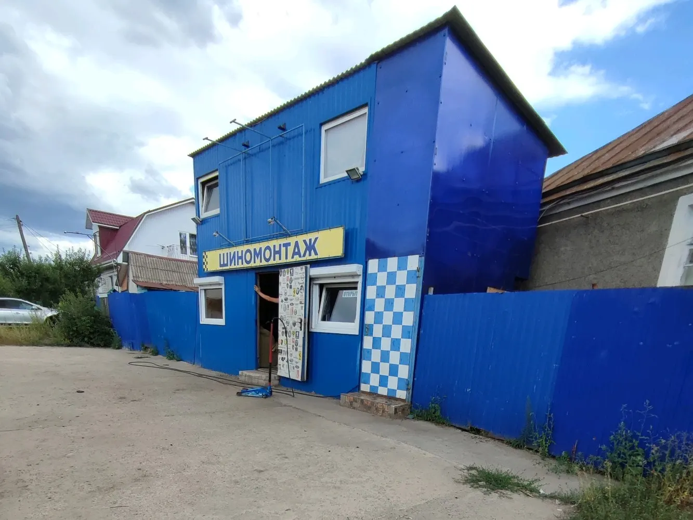
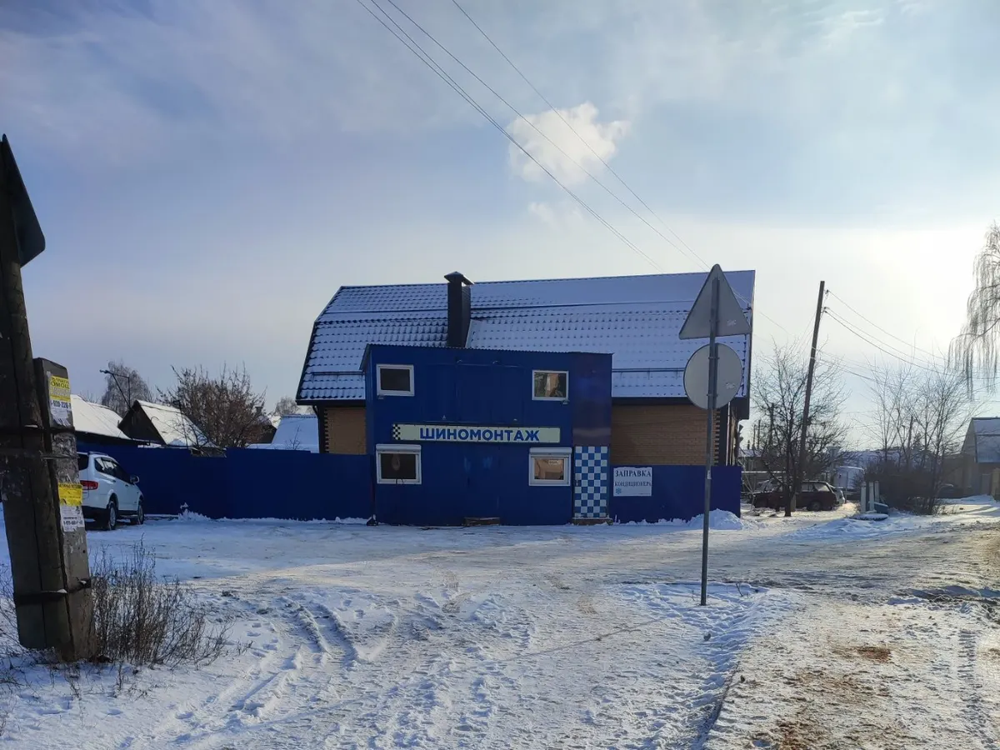
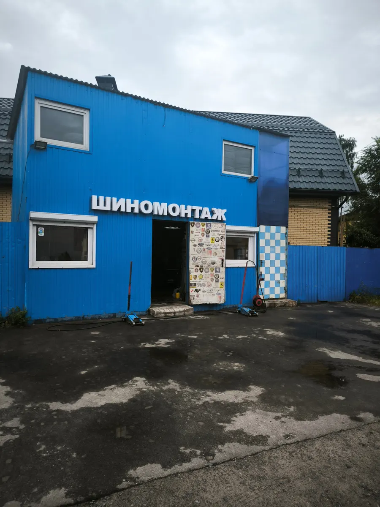

Шиномонтаж · Воронеж
Шиномонтаж в Воронеже – открытый прайс до приезда
Куйбышева, 54. Ежедневно 08:00–20:00. Прайс обновлён 15 ноября – цены видны заранее.
- Рейтинг 4,8 · 63 отзыва на Яндекс.Картах
- Ежедневно 08:00–20:00, без выходных
- Гарантия, Wi-Fi, вулканизация, шиповка, правка дисков

Что входит в переобувку
Входит
- Снять и поставить четыре колеса
- Перебортировка
- Балансировка каждого колеса и грузики
- Затяжка динамометрическим ключом
- Проверка давления
Отдельно, если нужно
- Run-flat и низкий профиль – отдельной строкой
- Замена вентилей и датчиков
- Сезонное хранение
Цена известна до приезда
Прайс из вашей карточки на Картах, обновлён 15 ноября.
Ремонт шин
- Ремонт, латка 50 мм500 ₽
- Ремонт, жгут350 ₽
- Герметизация борта шины305 ₽
Остальное
- Переобувка комплектауточнить
- Балансировка колесауточнить
Цены на переобувку и балансировку появятся здесь после звонка владельца – до этого спросите в мессенджере, отвечают быстро.
Как проходит
- 01
Записались онлайн или написали
Выбрали услугу и время – сообщение уходит в WhatsApp или Telegram.
- 02
Приехали – Куйбышева, 54
Синий бокс, заехать удобно.
- 03
Цену назвали до работы
Как в прайсе выше – «цены радуют» пишут в отзывах.
- 04
Забрали машину
«Делают быстро» – отзыв на Картах.


Что говорят клиенты
«Лучший шиномонтаж в городе»
«Выручали не один раз. Отличные цены» – отзыв на Картах.
«Делают быстро»
«Цены радуют в отличие от дилеров» – отзыв на Картах.
«Широкий спектр услуг»
Вулканизация, шиповка, прокатка и реставрация дисков – с карточки.
Отзывы с Яндекс.Карт
«Лучший шиномонтаж в городе, мужики знают толк в своей работе, широкий спектр услуг, выручали не один раз. Отличные цены.»
Василий Борисович · 11 августа
«Отличный шиномонтаж! Ребята настоящие профессионалы своего дела. Всегда всё быстро.»
Жаннет · 4 ноября
«Отличные ребята, делают быстро и цены радуют в отличии от дилеров и обнаглевших сервисов.»
Константин Сенькин · 14 ноября
Отзывы с карточки на Яндекс.Картах, без правок.
Частые вопросы
Где вы находитесь?
Воронеж, улица Куйбышева, 54. Ежедневно 08:00–20:00.
Сколько стоит переобувка?
Цены на переобувку появятся на сайте после звонка владельца. Напишите в мессенджер – отвечают быстро.
Есть ли гарантия?
Да – «Гарантия» указана в особенностях карточки на Яндекс.Картах.
Запишитесь – цену назовём до приезда
- Адрес
- улица Куйбышева, 54, Воронеж
- Часы
- Ежедневно 08:00–20:00
- Телефон
- +7 (952) 954-21-10